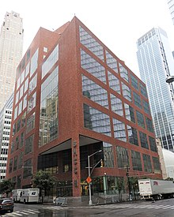

The Borough of Manhattan Community College (BMCC) is a college located in Tribecca.
My major at BMCC is Computer Science
BMCC offers a multitude of courses from SPEECH 101 to SOFTWARE DEVELOPMENT
In order to encourage student participation, every Wednesday at 3:30, all students at BMCC are have no classes so that they make take part in clubs!
Link to BMCC